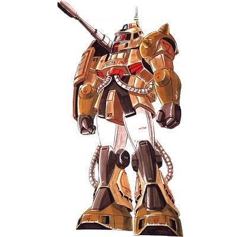

| MS-06K Zaku Cannon Land Combat Artillery Zeon Duchy Mobile Suit |
|
|  | |
General and Technical Data |
|
|
Model number: MS-06K Code name: Zaku Cannon Unit type: mass production artillery mobile suit Operator: Zeon Duchy Dimensions: head height 17.7 meters; overall height 18.4 meters (cannon barrel) Weight: empty 59.1 metric tons; max gross 83.2 metric tons Construction: High Tensile Steel Powerplant: Minovsky type ultracompact fusion reactor, output rated at 976 kW Propulsion: rocket thrusters, 41000 kg total Performance: thruster acceleration 0.49 G; maximum ground running speed 73 km/h Equipment and design features: sensors, range 4400 meters Fixed armaments: 180mm artillery cannon, mounted on ejectable backpack over right shoulder; 2-tube grenade launcher, mounted on backpack Optional fixed armaments: 2 x 3-tube missile pod, mounted on legs, 2 x 2-tube missile launcher, mounted on forearms. Optional hand armaments: 120mm machinegun, drum-fed; 3x grenade Magnetic Storage Racks: 5, primary rack on backpack, one secondary rack on either hip. 2 ammunition racks on front hips. Legs can additionally mount 3-tube missile launchers or panzer fausts. |
|
| Technical and Historical Notes | |
|
Zeon R&D, expecting to encounter heavy resistance from Federal air power, began to contrive a Zaku variant with a rapid-firing vulcan gun on its right shoulder. This was given the designation of MS-06K, and development continued at the Zeon's newly-occupied California Base. Later, when it became apparent that the Federation had its own mobile suit development program, the vulcan gun was scrapped in favor of a large, accurate ballistic cannon that would presumably be used for direct fire against these new machines.
The Zaku Cannon is an unusual variant. Though it uses the standard J-type Zaku's frame, its external body has been completely remade, and sports numerous additional maneuvering thrusters, a much larger shield, and a redesigned head and torso with a 360-degree mono-eye. Extra armor is added to its legs to counterbalance the cannon's recoil. The Zaku's backpack is also ejectable, allowing it to discard the heavy cannon when mobility or a quick escape is needed. It arms the basic Zaku weaponry for close-range combat.
The Zaku Cannon's gun is also capable of long-range indirect fire, and is quite deadly when in a strategic location and paired with a forward spotting unit. However, the Zaku must be in a stationary, half-crouching position to fire without risking falling over. Furthermore, all Zaku Cannons are also equipped with efficient heat dispersion gear, allowing them to function moderately well in arid environments.
|
 RPG quick stats sheet
RPG quick stats sheet | Weapons and Features | |

 

Zaku II Cockpit |
|